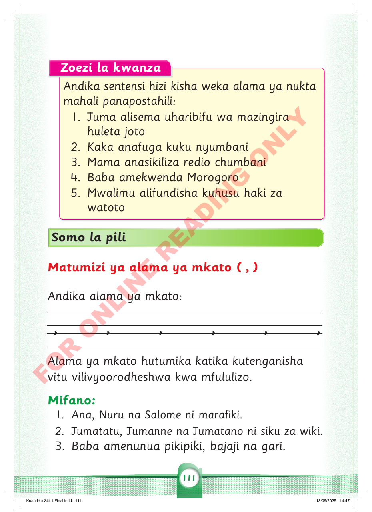

Zoezi la kwanza
Andika sentensi hizi kisha weka alama ya nukta mahali panapostahili:
1.
Juma alisema uharibifu wa mazingira huleta joto
2.
Kaka anafuga kuku nyumbani
3.
Mama anasikiliza redio chumbani
4.
Baba amekwenda Morogoro
5.
Mwalimu alifundisha kuhusu haki za watoto
Somo la pili
Matumizi ya alama ya mkato ( , )
Andika alama ya mkato:
, , , , , ,
Alama ya mkato hutumika katika kutenganisha vitu vilivyoorodheshwa kwa mfululizo.
Mifano:
- 1. Ana, Nuru na Salome ni marafiki.
- 2. Jumatatu, Jumanne na Jumatano ni siku za wiki.
- 3. Baba amenunua pikipiki, bajaji na gari.